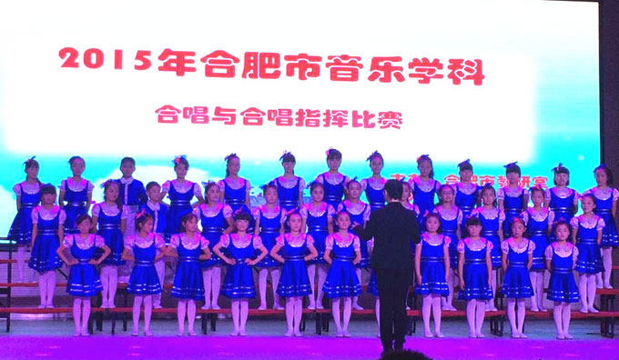

放飞少年宫征文比赛
1、我眼中的少年宫
在我五年级的时候，我被光荣的选为合唱团的队员，是的，我很开心，因为我喜欢音乐，我爱音乐。
我怀着激动的心情来到了音乐教室，哇塞，好多人大叫起来，我随着欢呼声伸头一看，我也不禁哇塞起来，天哪，你都不知道那有多么令人惊讶的地方，音乐教室装潢舒适而豪华，整洁而且美丽，给人很舒服很舒适的感觉，总之音乐教室很美，是那种整洁，宽阔，精致的美。第一次上课，老师有弹琴、唱歌，我终于身临其境的听到了优美的声音，我伴随着老师动听的音乐声，仔细的打量了音乐教室，前面是老师的大讲台，大讲台的左右两边分别有一架钢琴和几架击打乐器，对是架子鼓，我们正对着大讲台坐着，我们做的凳子是可以移动的长方体板凳，而且有三种颜色，有序的排列，我们整齐的坐在上面，老师开始教我们唱歌，还教我们平时如何练声等一些唱歌技巧，王老师给我影响非常大，有时有些严格，但有时也很温柔，总之她教学有方，所以，我是比较喜欢王老师的。
演出的那一天，我坐上了大巴车去滨湖参加演出，穿上蓝色的舞裙真是漂亮可爱，感觉自己像公主一样，当然演出我们也很卖力，结果也很不错哦。
在我眼中的少年宫是美丽的，梦幻的，充满想象力的......
2、我最爱的合唱团
自从学校开办了少年宫，我积极参加了合唱团，这使我的课外生活变得更加丰富多彩。少年宫里有许多项目，如书法、美术、手工、电脑绘画等。同学们可以根据自己嘻哈的项目进行对号入座，更好的掌握这些，对自己的为了也有很大的帮助。
还记得第一次刚踏进少年宫的那一刻，我都惊呆了，光滑优质的木地板，天蓝色的窗帘，整齐排列的凳子，五彩缤纷的，连灯都那么梦幻与奇特，仿佛到了一个童话王国。那么好的环境，使得心情愉悦，自然就会认真听老师的话，认真学习，认真听讲，当然进步也非常快。
合唱的老师对我们也非常好，尽力的教我们如何练声，怎样使声音变得洪亮有力……我们最初学的是《小白船》和《唱脸谱》。从不会到会，从不好到好到更好，这步步都是老师的辛苦培育，我感谢老师。
少年宫是个神奇的地方，这里有你的兴趣爱好，还可以发展你的兴趣爱好，这里不仅能是你变得快乐，还能使你收获满满，多方面成长，总之少年宫能让你变成一个多才多艺的人
3、焕然一新的书画教室
我是从四年级开始学习书法的，当时，书房室的桌子很脏，常常袖子会被弄上一些墨汁，都洗不掉，窗帘、墙上也都有墨水及一些涂鸦，虽然能学习到一些书法技巧和知识，但是对于书画室的环境，很是不满意。
直到五年级的时候，书画室变了，不仅变得干净了，连桌子凳子都焕然一新，墙也重新刷白了，还做了设计，变得很有艺术氛围，窗帘也换成了蓝色的，周围摆上了许多书画作品，我们在里面写字画画，不禁觉得精神很好，连写得字都如图书画教室一样焕然一新，变得漂亮整洁了。
我们的老师姓周，他有头卷卷的短发和满脸长长的胡子，我们私下都叫他大胡子老师，他今年大概有五六十岁了，和我的爷爷差不多，让我想起了我那也是满脸胡子的爷爷，而且周老师很风趣，让我有时觉得他还很可爱，有时又很和蔼可亲
现在我更喜欢我们的书画教室，也喜欢我们的少年宫和大胡子爷爷老师。